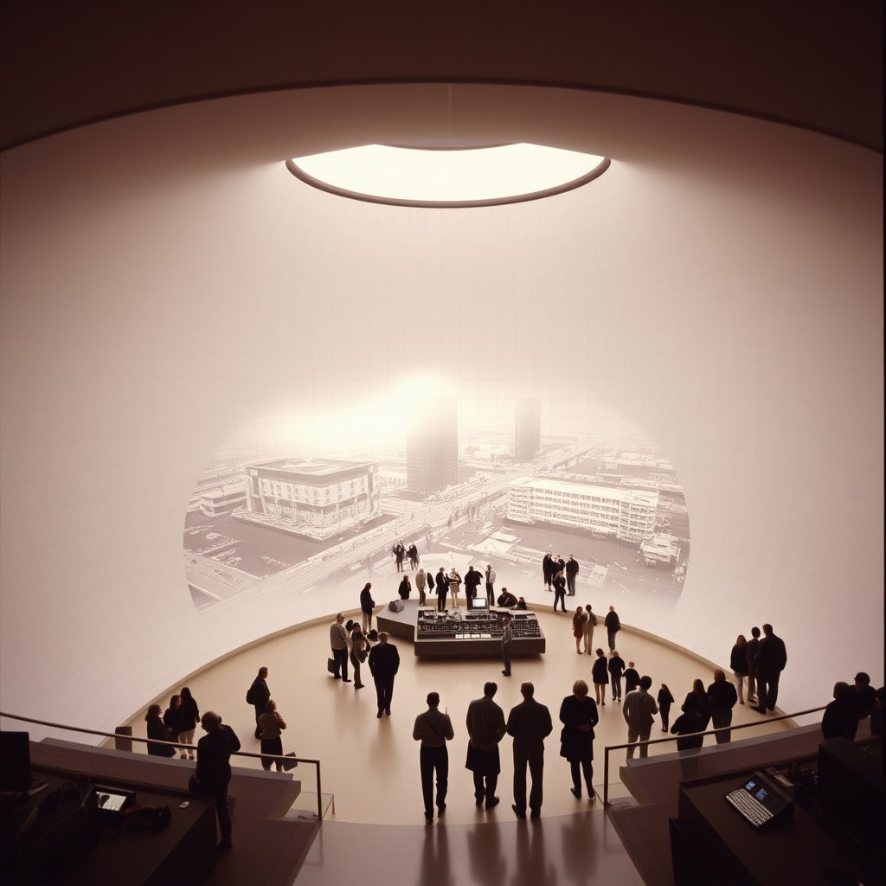
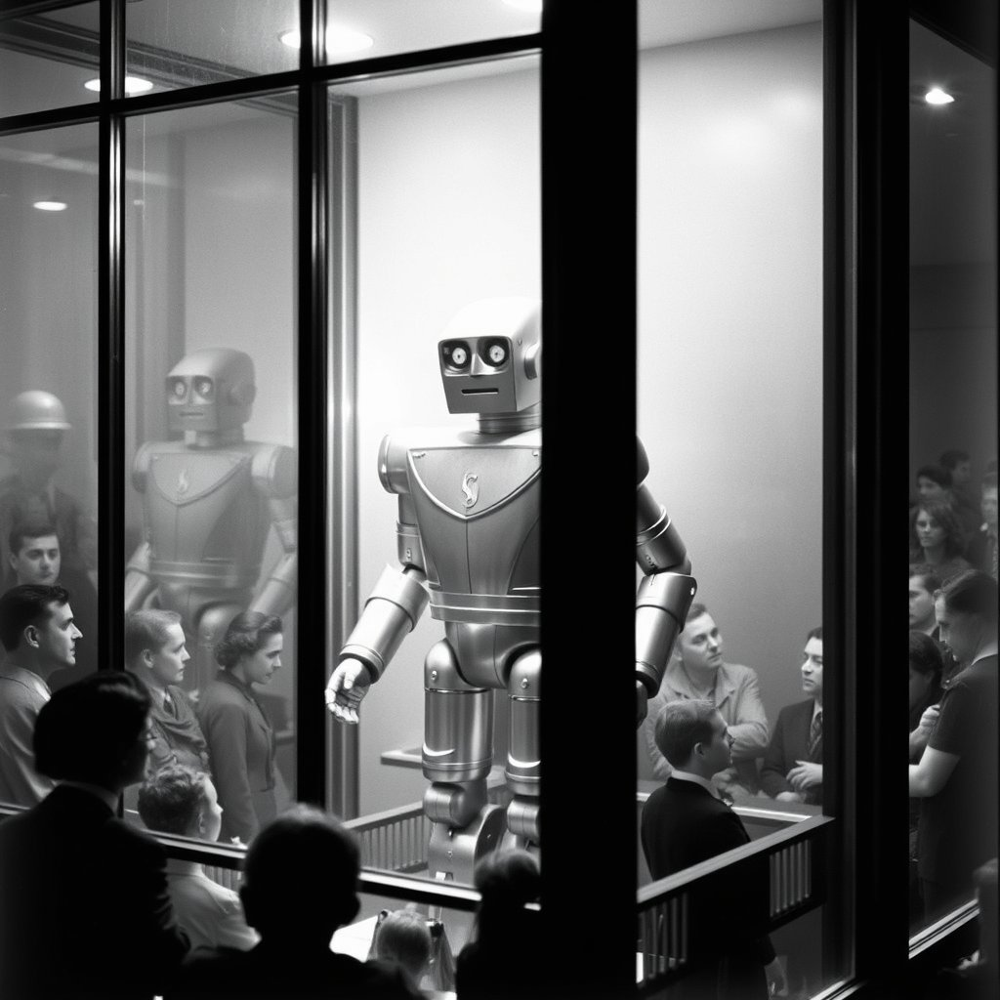
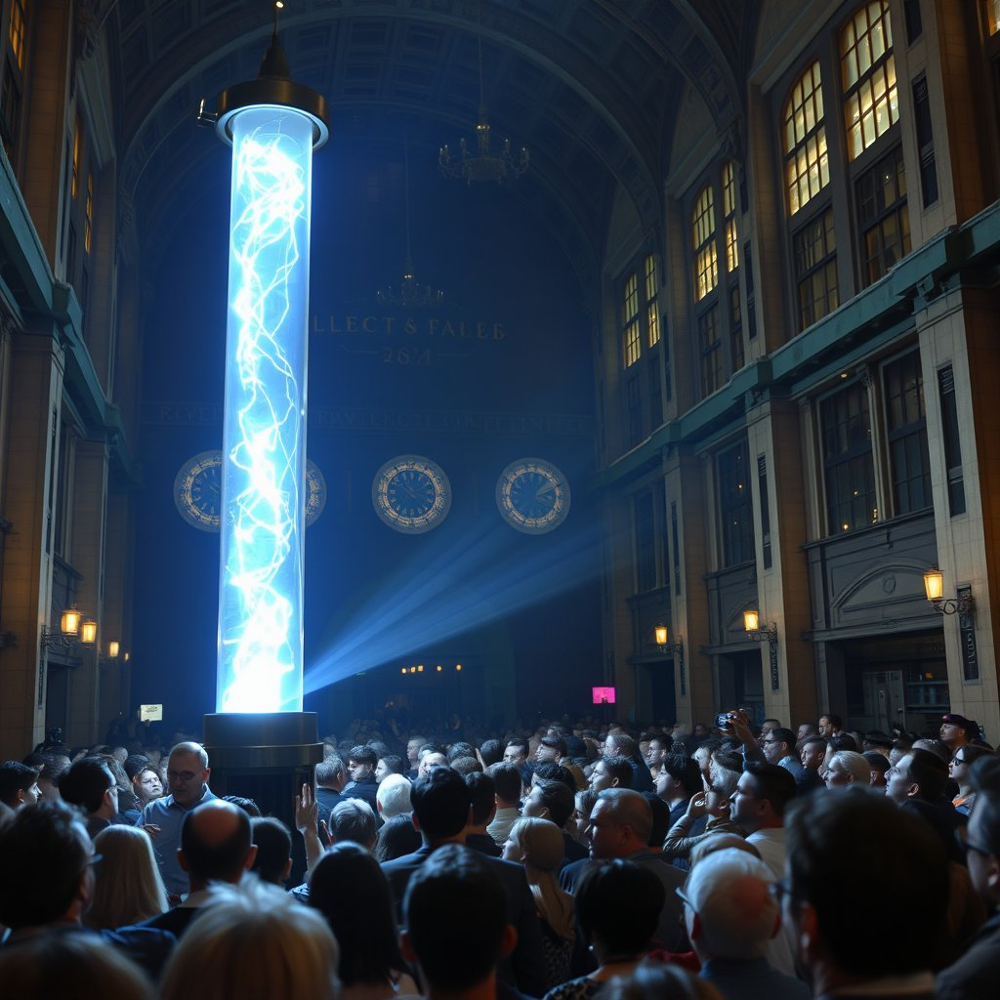
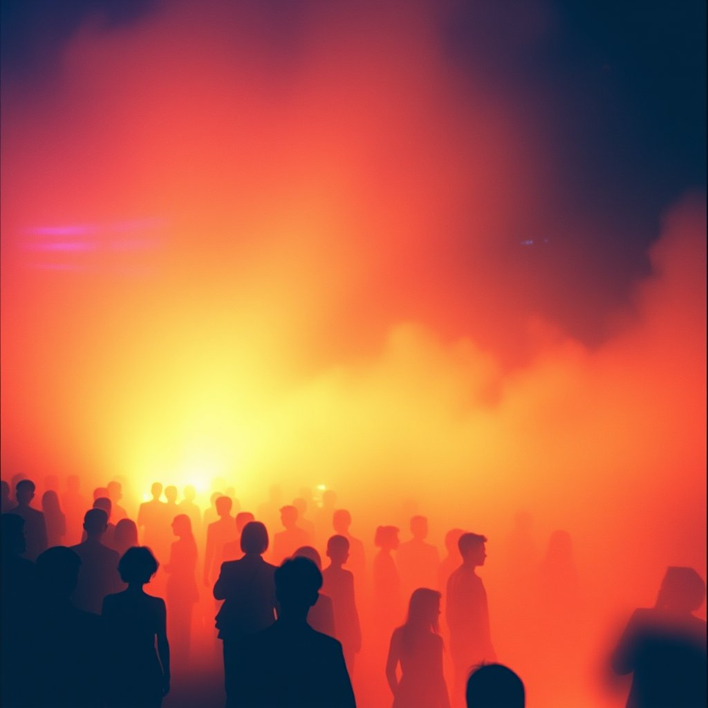
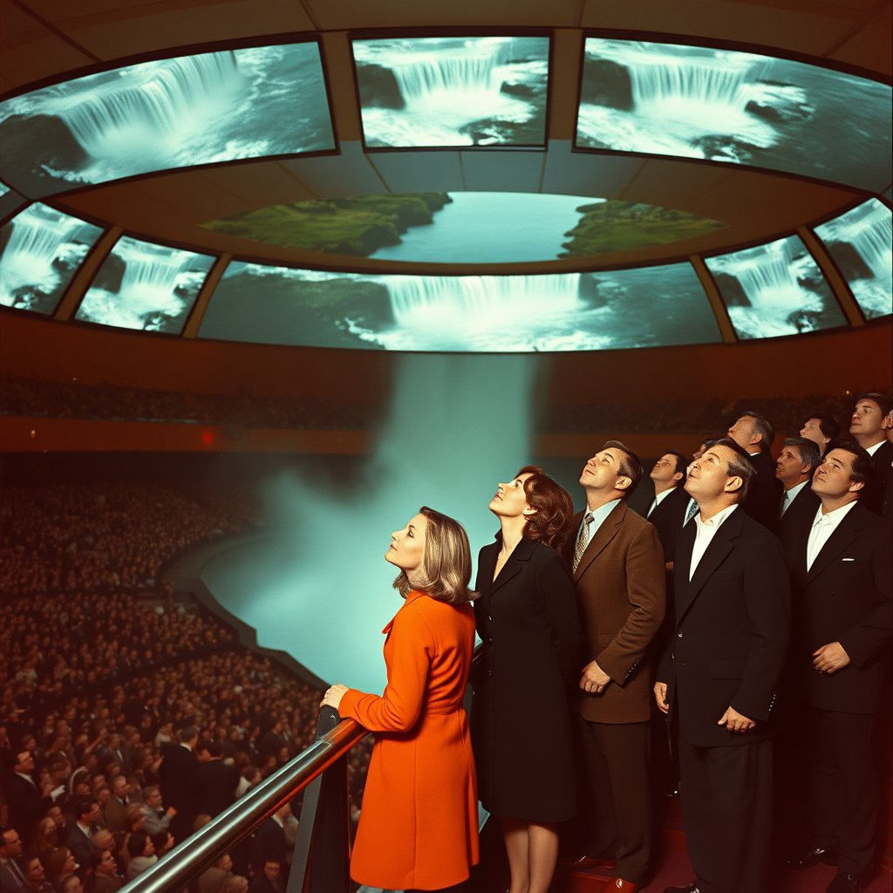
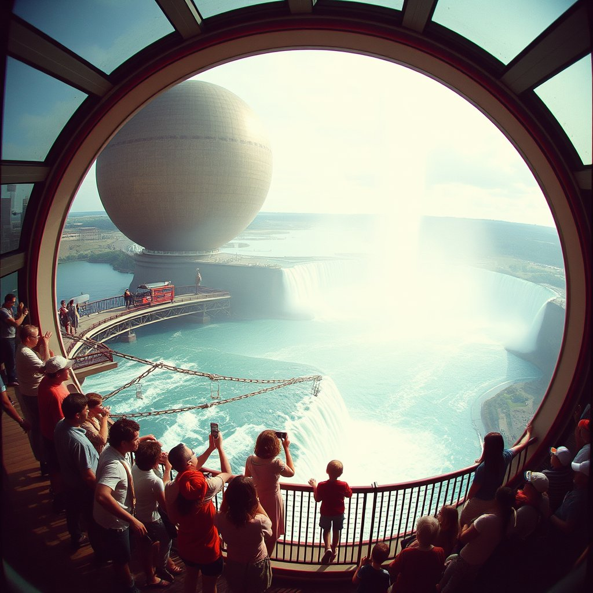

Run results · June 2026
All five fairs
Each card shows the seed image, the inline video (plays automatically), the poem from Llama, and the poem image from FLUX. All generated on one QB2 machine.
1964 · New York
World's Fair — IBM People Wall
Flushing Meadows, Queens · "Peace Through Understanding"

FLUX.1-schnell · seed image
Prompt
Kodachrome slide film photograph, 1964. A grandstand of 500 fairgoers in summer clothes — children gripping armrests, women clutching handbags — rises hydraulically on the IBM People Wall into the interior of a vast white egg-shaped auditorium. Curved white walls are studded with repeating IBM logotypes. Overhead, a Charles Eames film projection throws blue-gray light. The floor is moving upward, and half the crowd is grinning.
SkyReels V2 I2V · 33 frames
Poem — Llama 3.3 70B
In the IBM Pavilion's egg-shaped dome,
Visitors rise, a hydraulic tide, to Eames' cinematic dream,
"A Computer Perspective" unfolds, a promise of tomorrow's gleam.
But as they gaze upon the whirring mainframes, a disconnect forms,
Between the Space Age optimism and the future's unfulfilled norms,
In this fleeting moment, wonder and disillusion entwine.
Visitors rise, a hydraulic tide, to Eames' cinematic dream,
"A Computer Perspective" unfolds, a promise of tomorrow's gleam.
But as they gaze upon the whirring mainframes, a disconnect forms,
Between the Space Age optimism and the future's unfulfilled norms,
In this fleeting moment, wonder and disillusion entwine.

FLUX.1-schnell · poem as prompt
1939 · New York
World's Fair — Elektro the Robot
Flushing Meadows, Queens · "The World of Tomorrow"

FLUX.1-schnell · seed image
Prompt
Kodachrome slide film photograph, 1939. A seven-foot golden aluminum humanoid robot stands on a low stage inside a glass-walled pavilion, aluminum lips parted mid-sentence, one hand raised with fingers spread for counting. A Westinghouse technician in a white lab coat holds a lit cigarette near the robot's upper lip. Hundreds of spectators press six-deep against the glass exterior, hats craning, a child lifted on a father's shoulders to see over the crowd.
SkyReels V2 I2V · 33 frames
Poem — Llama 3.3 70B
Behind glass, Elektro's metal form gleams bright,
A marvel of 1939's futuristic light,
As Depression-weary crowds press in to see,
The seven-foot robot count with mechanical glee.
In Westinghouse Hall, a vision of tomorrow shines,
But the future that follows will be far from divine.
A marvel of 1939's futuristic light,
As Depression-weary crowds press in to see,
The seven-foot robot count with mechanical glee.
In Westinghouse Hall, a vision of tomorrow shines,
But the future that follows will be far from divine.

FLUX.1-schnell · poem as prompt
1893 · Chicago
World's Columbian Exposition — Tesla's Light
Jackson Park · "The White City"

FLUX.1-schnell · seed image
Prompt
Sepia daguerreotype aesthetic, 1893 Chicago Electricity Building. A darkened demonstration room, a crowd pressed three-deep behind a rope barrier. At center: Nikola Tesla in a dark frock coat holds a glass vacuum tube aloft — it blazes with cold blue-white phosphorescent light, lit by no wire, fed by invisible wireless current. Men's faces glow astonished. Women grip their companions' arms. On the bench behind him: the copper Egg of Columbus spinning silently upright in its brass induction ring.
SkyReels V2 I2V · 33 frames
Poem — Llama 3.3 70B
In the Electricity Building's hallowed space,
Tesla's glass tube shines with eerie, blue-lit pace,
A wireless marvel, born of his daring dream,
The crowd's upturned faces, bathed in its ethereal beam.
Their gasps and whispers weave a spell of awe and fright,
As the future, like a specter, takes its first, flickering light.
Tesla's glass tube shines with eerie, blue-lit pace,
A wireless marvel, born of his daring dream,
The crowd's upturned faces, bathed in its ethereal beam.
Their gasps and whispers weave a spell of awe and fright,
As the future, like a specter, takes its first, flickering light.

FLUX.1-schnell · poem as prompt
1970 · Osaka
Expo 70 — Nakaya's Fog Pavilion
Suita, Osaka Prefecture · "Progress and Harmony for Mankind"

FLUX.1-schnell · seed image
Prompt
Fujiko Nakaya's artificial fog sculpture engulfs the Pepsi geodesic sphere at twilight, Expo 70 Osaka, March 1970. Visitors in mod coats and platform shoes dissolve waist-deep into luminous white vapor, lit from below by xenon arc lamps. The dome's ridged surface barely visible through the mist. Fujifilm Velvia grain, saturated cyan-white haze, deep indigo sky.
SkyReels V2 I2V · 33 frames · depth skipped (fog)
Poem — Llama 3.3 70B
At Expo 70's Pepsi Pavilion, Nakaya's mist
Envelops the crowd, a luminous, xenon-lit kiss,
Hundreds dissolve, their forms uncertain, free
In Osaka's futurist haze, where technology meets reverie.
A dream of tomorrow, born of fog and light, fades to grey,
Leaving us with wonder, at the future's unkept promise of the day.
Envelops the crowd, a luminous, xenon-lit kiss,
Hundreds dissolve, their forms uncertain, free
In Osaka's futurist haze, where technology meets reverie.
A dream of tomorrow, born of fog and light, fades to grey,
Leaving us with wonder, at the future's unkept promise of the day.

FLUX.1-schnell · poem as prompt
1967 · Montreal
Expo 67 — Disney's Circle-Vision
Île Sainte-Hélène · "Man and His World"

FLUX.1-schnell · seed image
Prompt
Inside a cylindrical theatre at the 1967 Montreal World's Fair, hundreds of visitors stand gripping steel guide rails as nine giant curved screens surrounding them fill with aerial footage of Niagara Falls rushing directly overhead. Women in mod wool coats and men in narrow-lapel suits lean into the rails, faces upturned in genuine vertigo. Bold Kodachrome saturation, 1967 Canadian color magazine photography.
SkyReels V2 I2V · 33 frames
Poem — Llama 3.3 70B
In Expo 67's futuristic sphere,
Disney's Circle-Vision casts a dizzying spell,
Niagara's torrent cascades above, a watery shroud,
As visitors cling to steel, their faces upturned, awed.
A last glimpse of Walt's promised tomorrow, now a relic of a bygone dream.
Disney's Circle-Vision casts a dizzying spell,
Niagara's torrent cascades above, a watery shroud,
As visitors cling to steel, their faces upturned, awed.
A last glimpse of Walt's promised tomorrow, now a relic of a bygone dream.

FLUX.1-schnell · poem as prompt
Total wall time: ~3 hrs · Pure inference time: ~55 min · 30 artifacts · 5 playlists · QB2 (P300X2 Blackhole)